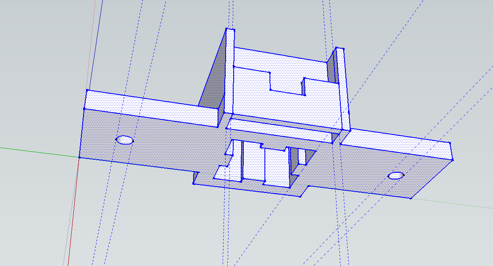
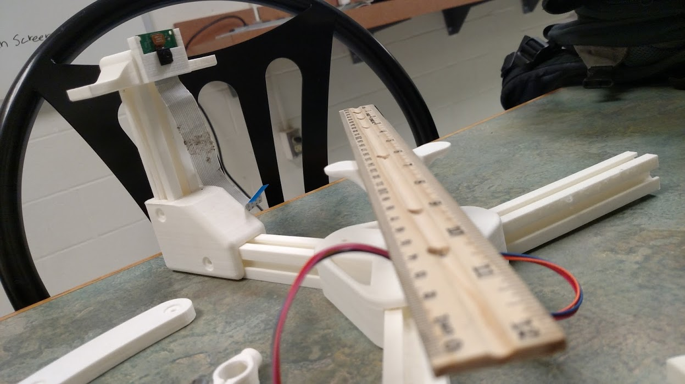

This is a blog logging my activities at the hack shack at ORHS. Posts are ordered by how recent they are.
Last 3D Printed Parts
10-29-2015
Today I printed the last parts for the scanner. After the first camera mount didn't fit, I re-designed the mount. I added a slot
in the bottom to fit a 20x20 profile. After this was printed (with new fillamint), and the nuts and bolts were bought, I discovered
that the legs wouldn't hold the scanner steady. I designed simple vertical legs to attach to the 20x20's, and they did the trick. The pictures
below is the re-designed camera mount.

Pictures (click to enlarge)
Last 3D Printed Parts
10-29-2015
Today I printed the last parts for the scanner. After the first camera mount didn't fit, I re-designed the mount. I added a slot
in the bottom to fit a 20x20 profile. After this was printed (with new fillamint), and the nuts and bolts were bought, I discovered
that the legs wouldn't hold the scanner steady. I designed simple vertical legs to attach to the 20x20's, and they did the trick. The pictures
below is the re-designed camera mount.
Pictures (click to enlarge)
Plan for the 3D Scanner
10-20-2015
The 3D scanner is starting to come together. Parts are starting to fit together, and as they do, I'm starting to realize
that some pieces need to be reprinted. I want to print: a new motor attachment that has the plate attached to it already, a
a camera mount with more room for the camera as well as a 20x20 mount, and lastly a properly lengthed 20x20 for the camera elevation.
After this is done, it's time to move on to the software!

Pictures (click to enlarge)
Movement and Goals
10-13-2015
This is just a quick update. All the lasers work and I got the Pi to turn the stepper motor. Still need to better understand how the motor works, but will work on that. Besides buying 20x20 profiles and nuts and bolts, the physical side is alomst
done!
The four lasers showed up today. The only concern I have for them is their brightness, as they are only 5mW lasers. It's now time to build the scanner, before we move on to software. I have to pick a couple things up at home depot before construction
can begin. Besdies organizing, I did a lot of work on making my website compatable with all screen sizes using CSS media queries.
This week was short for me, because I missed one and a half days at the end of the week due to sickness. But during the free time, I worked on a home page for my website, aknh.net. It now re-sizes to fit screen sizes,
and has an alternate menu, compleatly css based, for smaller screens.
An early suprise! The motor arrived early. It was orederd off ebay, and the arrival date was set to late November, but it showed up really early! It fits very well in the motor mount, as seen in the first picture. Now I can start controlling the
moter with the Raspberry Pi, and wait for the lasers!
Pictures (click to enlarge)
Starting the Blog
9-27-2015
This will be the first blog post on this blog about my activities with the Hack Shack. We have been discovering our new gadgets, and figuring out how to use everything. This blog is mostly going to be about building a 3d scanner, at least for the first
couple weeks. I have just finished this site, and all the parts for the 3d scanner have been printed. The lasers for the scanner have not arrived yet.


{kind=link}
{kind=link}
{kind=link}
{kind=link}
{kind=link}
{kind=link}
{kind=link}